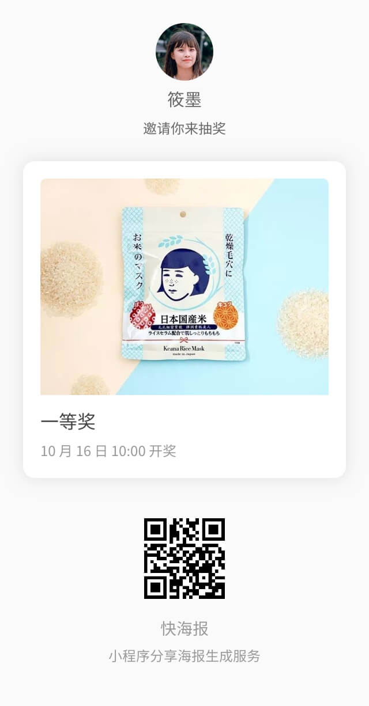

小程序开发者都希望自己的小程序得以广泛传播，因为不少小程序都设计了很多转发激励行为，但分享小程序到朋友圈（或其他外部平台）一直是一个难题。一个常见但方案就是生成分享海报、分享图片。但生成分享图片在技术上却也是一个难题。
目前常用技术方案基本分为三种：
第一种方案：要求较高，canvas 和纯 html 布局相去甚远，零基础学习成本较高，而且在不同的微信浏览器中效果不可预期，想短时间内做出精美可控的生成图片不容易。实操的时候发现了一个非常麻烦的事情：网络图片或者 base64 图片都无法直接在 canvas 里渲染显示，要先下载好传进去。
第二种方案：后端库可以完成较为简单的需求，但字体加载、阴影、圆角、透明等方案效果需要精调，如果文字需要截断或动态伸缩长度时并不容易处理。图片的截取和伸缩自适应也不灵活。而且选用这种方案相当于需要把 UI 布局的工作丢给后端工程师去解决，这不是他们擅长的范围，效果未必会好。
第三种方案：页面的绘制方面，纯前端技术即可完成，难度低，完成度高，但是需要在后端起一个 node 服务开启 puppeteer 去控制服务端 Chrome 浏览器。这种方案的缺点就是成本太高，我们和业界同行都测算过，结果差不多：4 核 16G 的服务器生成图片的 QPS 大概只有 10-20，相当于一秒钟较差情况只能生成 10 张图片，这对于突发的大量分享需求并不能满足，而且这种配置的服务器，不能部署其他服务，只跑这个服务就会用尽大部分资源。
费用上：只单单算 5M 带宽的服务器费用一个月就要 700+ 人民币，流量和图片托管费用另算。此方案的最小化实现：至少需要 1 核 2G 的服务器才能较为顺畅地完成一次顺利截图，但是还是要处理浏览器无响应假死等情况，较为复杂。但综合来看，这种方案是效果最好最为灵活的。
快海报 kuaihaibao.com 是专门提供小程序分享海报生成服务的，技术上用的就是上面所述的第三种方案，但是只需要调用他的 API 就可以完成，不需要开发者维护 puppeteer 和 headless Chrome，而且成本较低，一张分享图的最低生成成本是 0.033 元。
其实真正集成到自己的服务中时，平均成本要比这个低，因为有些生成的图片的二维码，如果不带用户个人信息（不给分享的用户返利）时，可以生成一次之后永久缓存起来，其他用户再分享同一个东西都用缓存好的图片，综合成本就降下来了。
算一下成本：
这样的话每个月成本就是 250 元人民币左右，相比 700+ 人民币但服务器成本省太多了。这是测算比较高的指标，而且是完全不应用缓存方案的情况。
如果你的小程序还处于冷启动的阶段：
每月成本 25 元。比 1 核 2G 的最小化自部署方案也要便宜。但带来的收益是无穷的，750 张分享图发到朋友圈，每张分享图 1000 受众浏览，一个月就是将近 750000 人次分享受众。
首先去 https://kuaihaibao.com/ 注册账号，验证邮箱激活之后，其实就可以先测试用了，每个账号有 100 次测试额度，测试生成的图片带水印。
网站左侧的 [文档] 页面能找到集成文档，非常简单，一共就只有一个核心 API，通过 HTTP 调用的。
先在【开发】->【设置】中激活 token
然后打开 【开发】->【模板】中，找到自己喜欢的模版。因为我只想生成一个简单的分享图片，所以最简单的方式就是使用网站内置的模版，内置模板目前有 8 款，应该能满足大部分小程序的需求了，抽奖、打卡、图文、文字、电商都有，改一改文案和图片就可以了。
我选了这个抽奖模板：

按照 https://kuaihaibao.com/doc/docs/template/kzccda95.html 文档描述的 JSON 改成我需要的：
{
"backgroundColor": "#fafafa",
"backgroundImage": "",
"user": {
"avatar": "https://khb-sample.oss-cn-shanghai.aliyuncs.com/sample/girl_2.jpg",
"nickname": "我是测试账号",
"color": "#666"
},
"tip": "邀请你来抽奖",
"qrcode": "https://khb-sample.oss-cn-shanghai.aliyuncs.com/sample/sample_qr_0.png",
"records": [
{
"title": "一等奖",
"desc": "2019 年 11 月 16 日 10:00 开奖",
"image": "https://s3.cn-northwest-1.amazonaws.com.cn/res.weiyidan.com/production/10000002/4109f8e51a8f43b9816dbc8fe636e22a.jpeg"
}
],
"brand": "我的测试抽奖小程序",
"slogan": "快来和我一起抽吧！",
"metaColor": "#999"
}然后打开 Terminal 做一次请求试试：
curl -X "POST" "https://api.kuaihaibao.com/services/screenshot" \
-H 'Authorization: Bearer 这里写你自己的 token' \
-H 'Content-Type: application/json; charset=utf-8' \
-d /pre>{
"template": "kzccda95",
"data": {
"qrcode": "https://khb-sample.oss-cn-shanghai.aliyuncs.com/sample/sample_qr_0.png",
"records": [
{
"title": "一等奖",
"desc": "2019 年 11 月 16 日 10:00 开奖",
"image": "https://s3.cn-northwest-1.amazonaws.com.cn/res.weiyidan.com/production/10000002/4109f8e51a8f43b9816dbc8fe636e22a.jpeg"
}
],
"tip": "邀请你来抽奖",
"slogan": "快来和我一起抽吧！",
"metaColor": "#999",
"brand": "我的测试抽奖小程序",
"backgroundImage": "",
"backgroundColor": "#fafafa",
"user": {
"avatar": "https://khb-sample.oss-cn-shanghai.aliyuncs.com/sample/girl_2.jpg",
"nickname": "我是测试账号",
"color": "#666"
}
}
}'返回了结果：
{
"success": true,
"data": {
"name": "iPhone 5",
"image": "https://khb-test-oss.oss-cn-shanghai.aliyuncs.com/screenshot/4fa63f2a3605cbdece90c659cbccea619d9cf9fa?x-oss-process=style/test_watermark"
}
}打开图片地址看看：
速度很快，图片很漂亮，只是中间带水印，充值后成为付费用户，再生成的图片水印就自动取掉了。
这里参考快海报官方给的最佳实践的逻辑参考图：
所以后端只需要做一件事，就是提供一个 API 给客户端用，这个 API 被调用的时候去请求快海报的服务器，再把结果返回给小程序就好了。